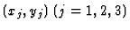
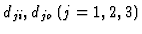
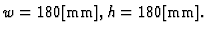
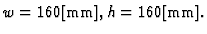

Each variable in Figure 8 shows:

: position of the jth axis
: diameter of the input and output gear of the jth axis
Let Eq. (11) be the given gear diameters.

The constraint set is firstly received by the symbolic part and inconsistency is not found. After removing redundant constraints, numerical solutions are computed by the numeric part. The following example solution is obtained.

The constraint set is firstly received by the symbolic part and inconsistency is not found. After removing redundant constraints, numerical solutions are computed by the numeric part. However, no numerical solution is obtained and it concluded that there exists no solution which satisfies the given constraints.